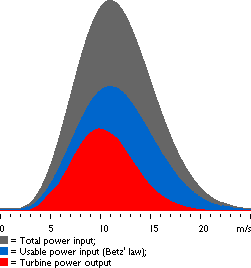

Power Density Function

Power
of the Wind
 From the page on the
energy in the wind, we know that the energy potential per
second (the power) varies
in proportion to the cube (the third power) of the wind speed,
and in proportion to the density of the air. (Its weight per
unit of volume).
From the page on the
energy in the wind, we know that the energy potential per
second (the power) varies
in proportion to the cube (the third power) of the wind speed,
and in proportion to the density of the air. (Its weight per
unit of volume).
 We may now combine everything we have learned
so far: If we multiply the power
of each wind speed with the probability of each wind speed
from the Weibull graph, we have calculated
the distribution of wind energy at different wind speeds = the
power density.
We may now combine everything we have learned
so far: If we multiply the power
of each wind speed with the probability of each wind speed
from the Weibull graph, we have calculated
the distribution of wind energy at different wind speeds = the
power density.
 Notice, that the previous Weibull curve changes
shape, because the high wind speeds have most of the power of
the wind.
Notice, that the previous Weibull curve changes
shape, because the high wind speeds have most of the power of
the wind.
From
Power Density to Power Output
This graph was drawn using the wind turbine
power calculator on this web site. The area under
the grey curve (all the way to the axis at the bottom) gives
us the amount of wind power per square metre wind flow we may
expect at this particular site. In this case we have a mean wind
speed of 7 m/s and a Weibull k=2, so we get 402 W/m2.
You should note that this is almost twice as much power
as the wind has when it is blowing constantly at the average
wind speed.
 The graph consists of a number of narrow
vertical columns, one for each 0.1 m/s wind speed interval. The
height of each column is the power (number of watts per square
metre), which that particular wind speed contributes to the total
amount of power available per square metre.
The graph consists of a number of narrow
vertical columns, one for each 0.1 m/s wind speed interval. The
height of each column is the power (number of watts per square
metre), which that particular wind speed contributes to the total
amount of power available per square metre.
 The area under the blue curve tells us how
much of the wind power we can theoretically convert to mechanical
power. (According to Betz' law, this is
16/27 of the total power in the wind).
The area under the blue curve tells us how
much of the wind power we can theoretically convert to mechanical
power. (According to Betz' law, this is
16/27 of the total power in the wind).
 The total area under the red curve tells
us how much electrical power a certain wind turbine will produce
at this site. We will learn how to figure that out in a moment
when we get to the page on power curves.
The total area under the red curve tells
us how much electrical power a certain wind turbine will produce
at this site. We will learn how to figure that out in a moment
when we get to the page on power curves.
The
Important
Messages
in the Graph
The most important thing to notice is that the bulk of wind energy
will be found at wind speeds above the mean (average)
wind speed at the site.
 This is not as surprising as it sounds, because
we know that high wind speeds have much higher energy
content than low wind speeds.
This is not as surprising as it sounds, because
we know that high wind speeds have much higher energy
content than low wind speeds.
The Cut
In Wind Speed
Usually, wind turbines are designed to start running at wind
speeds somewhere around 3 to 5 metres per second. This is called
the cut in wind speed. The blue area to the left shows
the small amount of power we lose due to the fact the turbine
only cuts in after, say 5 m/s.
The Cut
Out Wind Speed
The wind turbine will be programmed to stop at high wind speeds
above, say 25 metres per second, in order to avoid damaging the
turbine or its surroundings. The stop wind speed is called the
cut out wind speed. The tiny blue area to the right represents
that loss of power.
© Copyright 1999 Soren Krohn. All rights reserved.
Updated 6 August 2000
http://www.windpower.org/tour/wres/powdensi.htm